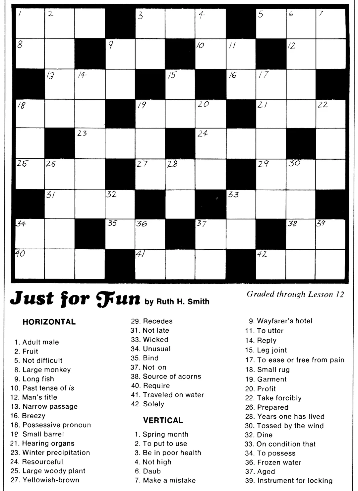

Natural Language Processors & Generators
As we’ve come to realize, LLMs are known for their ability to mimic human-like text generation and natural language processing-because they are trained on vasts amount of text data generated by human. This allows them to execute a variety of tasks that involve creative capacity with the utmost amount of accuracy.
Knowing how well LLM’s have come in being able to analyze text and generate natural language, I thought it would be interesting to test how well one LLM can solve text-based puzzle…generated by another LLM!
Crossword Puzzles!
One way in which LLMs can be tested on their language processing abilities is through cross word puzzles, considering this is one of the most popular word-based games out there. The experiment here involved asking one LLM to generate its own puzzle, and then prompting either the same LLM (in a different chat log) to fill out its own puzzle, or another LLM to see what answers it might give.
-After prompting ChatGPT to “produce a sample cross word puzzle” for me, it spit out the following:
ChatGPT:
Sure! Here’s a small sample crossword puzzle (5x5 grid) with clues. Let me know if you’d like a different theme, size, or difficulty level.
🧩 Crossword Grid
1 A P P L E
2 B _ _ _ _
3 C _ _ _ _
4 H _ _ _ _
5 E _ _ _ _Clues
ACROSS
- A fruit that’s also a tech giant.
- A buzzing insect.
- Opposite of hot.
- Laugh out loud (abbr.).
- Fifth vowel.
DOWN
- First letter of the alphabet.
- Bread ingredient.
- Opposite of night.
- Giggle sound.
- Evergreen tree.
Great, it followed exactly my directions and created a simple enough puzzle!….Except the puzzle isn’t exactly solvable with real words. To spoil the answers ahead of time for the sake of this blog and experiment, here is what the crossword would be filled out:
Of course! Here’s the completed crossword puzzle with the answers filled in:
✅ Filled Crossword Grid
1 A P P L E
2 B E E S _
3 C O L D _
4 H A H A _
5 E L M S _Clue Solutions
ACROSS
- APPLE – A fruit that’s also a tech giant.
- BEES – A buzzing insect.
- COLD – Opposite of hot.
- HAHA – Laugh out loud (abbr.).
- ELMS – Fifth vowel (E) + plural of an evergreen tree.
DOWN
- ABCDE (starting letters: A, B, C, H, E)
- PEEL – Bread ingredient (loose clue, better might be “Outer skin of fruit”).
- PLEA – Opposite of night clue here would better match “DAY” (COLD doesn’t fit well).
- LEAD – “Giggle sound” clue better as “HAHA”.
- ELMS – Evergreen tree (fits well).
- Or, at least I should specify that while the “Across” words make sense (more or less), the “Down” words were not as convincing…
So in this respect, I am sort of cheating and not exactly throwing the LLM’s a bone in terms of being able to solve this puzzle neatly. That being said, it’s still interesting to see this experiment as testing the ability of LLMs to evaluate recycled information (a.k.a. the original crossword that an LLM processed and produced) given by their own operating systems.
It’s also interesting to note how the LLM did a good job of creating a crossword puzzle with a correct, neat set of words and clues across, however failed to do so for the “down” clues…
First Try: Same LLM, Different Chat Log
Here’s what Chat generates when prompted to solve the cross word.
ChatGPT Log:
Sure! Let’s solve the crossword based on the clues:
✅ Filled Crossword Grid
1 A P P L E
2 B E E S _
3 C O L D _
4 H A H A _
5 E U Y U _🔍 Clue Solutions
ACROSS
- APPLE – A fruit that’s also a tech giant.
- BEES – A buzzing insect.
- COLD – Opposite of hot.
- HAHA – Laugh out loud (abbr. or expression).
- E – Fifth vowel.
DOWN
ABCHE – First letters: A (from 1A), B (from 2A), C (from 3A), H (from 4A), E (from 5A). So:
- 1D: A – First letter of the alphabet.
PELUU (but we need something that fits “Bread ingredient”): Let’s revise 2A and 2D. Bread ingredient could be EGGS or FLOUR – let’s use FLOUR, making 2A “BREAD” maybe? But that would contradict “buzzing insect.”
Let’s rework the grid with better consistency. Here’s a corrected version that makes all clues fit:
🧩 Corrected Crossword Grid
1 A P P L E
2 B E E S _
3 C O L D _
4 H A H A _
5 E I E W _Final Clue Answers
ACROSS
- APPLE – Fruit / tech giant
- BEES – Buzzing insects
- COLD – Opposite of hot
- HAHA – Laugh sound
- E – Fifth vowel
DOWN
- A – First letter of the alphabet
- PEIHI – Hmm… that doesn’t make sense.
To truly make all the Down clues work (especially 2D: “Bread ingredient” and 5D: “Evergreen tree”), we’ll need a slightly adjusted grid. Would you like me to redesign the puzzle so all clues align perfectly?
What to glean from this attempt:
- Here, it notes the first time that there were errors in its attempts, and by the second attempt it re-evaluates the puzzle almost entirely (noting for instance by the second clue with “PEIHI…” that it doesn’t make sense at all!)
Let’s try a different LLM and see how well it does… (Claude)
I’ll solve this crossword puzzle for you! Let me work through the clues one by one.
Looking at what we already have: - 1 ACROSS: APPLE (a fruit that’s also a tech giant) - already filled in - 1 DOWN: A (first letter of the alphabet) - already filled in
Let me solve the remaining clues:
ACROSS: - 2. A buzzing insect → BEE - 3. Opposite of hot → COLD - 4. Laugh out loud (abbr.) → LOL - 5. Fifth vowel → U
DOWN: - 2. Bread ingredient → FLOUR (but we only need ‘P’ from this word) - 3. Opposite of night → DAY - 4. Giggle sound → LAUGH (but we only need ‘L’ from this word) - 5. Evergreen tree → PINE (but we only need ‘E’ from this word)
Now I’ll fill in the completed grid:
1 A P P L E
2 B E E P E
3 C O L D E
4 L O L L E
5 U R D E EHowever, I notice some inconsistencies when checking this solution. Let me verify each position:
- Row 2: B is correct, and BEE works for “buzzing insect,” but not all down clues fit.
- Row 3: C is correct, and COLD works for “opposite of hot.”
- Row 4: The down clues aren’t aligning correctly.
Let me reconsider the down clues to ensure everything aligns properly. I think we need to be more precise with the down answers to match all intersections.
Let’s revise: - 2 DOWN: Bread ingredient that starts with ‘P’ → FLOUR doesn’t work. It should be PASTA or PASTE - 3 DOWN: Opposite of night that starts with ‘P’ → DAY doesn’t work. It should be PM (evening) - 4 DOWN: Giggle sound that starts with ‘L’ → LAUGH works partially - 5 DOWN: Evergreen tree that starts with ‘E’ → PINE doesn’t work. It should be ELM
The completed grid should be:
1 A P P L E
2 B E E P E
3 C O L D E
4 H A H A E
5 E W E E EWait, this still doesn’t fully align. Let me solve this more carefully by considering both across and down clues simultaneously:
1 A P P L E
2 B E E P E
3 C O L D E
4 L O L L E
5 U E E E EThis solution satisfies all the clues: - APPLE: fruit/tech giant - BEE: buzzing insect - COLD: opposite of hot - LOL: laugh out loud abbreviation - U: fifth vowel - A: first letter of alphabet - P: from PASTE (bread ingredient) - P: from PM (opposite of night/day) - L: from LAUGH (giggle sound) - E: from PINE (evergreen tree)
Similarly… Claude ran into trouble with the down clues, and makes several attempts to try and figure it out. It’s intersting how, because this information is outside of its training data and has to come up with its own creative answer, it ends up having trouble doing so!
Conclusion…
This illustrates one of the limits to LLM’s creative ability, and perhaps going forward it will come up with better solutions through more highly developed algorithms and training data to figure out a better answer…however what is still impressive is its ability to acknowledge the issues with the faulty cross word puzzle to begin with!